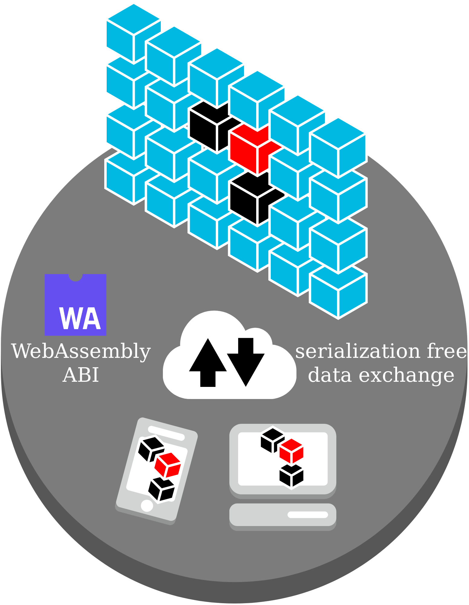

C++ Everywhere with
WebAssembly
GitHub Powered, WebAssembly Ready, C++ dependencies & upgrade manager
Damien Buhl (alias daminetreg) at nxxm.github.io
WebAssembly Primer
WebAssembly
- Binary instruction format
- Stack based "vm"
- Enables C++ web browser & server apps
w3c open standard
available everywhere in v1.0


Portable Binary instructions
- Small files
- Fast decoding
- Reduced memory usage
- The syntheis & evolution of asm.js & PNaCl
WASM Module
- PE or Elf for the Web.
WASM Module structure
WASM Module structure
int main() {
return 43;
}WASM Module structure
~158 bytes
00 61 73 6d 01 00 00 00 01 08 02 60 00 00 60 00 |.asm.......`..`.|
01 7f 03 03 02 00 01 04 05 01 70 01 01 01 05 03 |..........p.....|
01 00 02 06 15 03 7f 01 41 80 88 04 0b 7f 00 41 |........A......A|
80 88 04 0b 7f 00 41 80 08 0b 07 2d 04 05 5f 6d |......A....-.._m|
61 69 6e 00 01 06 6d 65 6d 6f 72 79 02 00 0b 5f |ain...memory..._|
5f 68 65 61 70 5f 62 61 73 65 03 01 0a 5f 5f 64 |_heap_base...__d|
61 74 61 5f 65 6e 64 03 02 0a 09 02 02 00 0b 04 |ata_end.........|
00 41 2b 0b 00 28 04 6e 61 6d 65 01 1a 02 00 11 |.A+..(.name.....|
5f 5f 77 61 73 6d 5f 63 61 6c 6c 5f 63 74 6f 72 |__wasm_call_ctor|
73 01 04 6d 61 69 6e 02 05 02 00 00 01 00 |s..main....... |WASM Module structure

(module
(type (;2;) (func (result i32)))
(import "env" "getTotalMemory" (func (;1;) (type 2)))
(func (;21;) (type 2) (result i32)
i32.const 43
return)
(export "_main" (func 21))
(data (i32.const 1024) "\05\c0\de\00\be\e0 ... ")
)
Portable yet Native

WASM Runtime
WASM Runtime
- Native speed, no emulation
- C++ Heap & Stack is allocated in a contiguous memory segment
- No Garbage Collection: Memory management as usual
WASM Runtime: No Garbage Collection

WASM Runtime: WASM 2.0 ?

WASM Runtime

CppCon 2014: Chad Austin "Embind and Emscripten: Blending C++11, JavaScript, and the Web Browser"
WASM Runtime: Multithreading
- pthreads has been implemented and works
- but is based on SharedArrayBuffer...

Web Development
The Javascript rise
- Javascript is a dynamically typed language
- C++ is a statically typed language
- Two irreconcilable worlds ?
Javascript & C++
- They share one key philosophy...
- Openness, Flexibility & Extensibility
Neither Bjarne Stroustrup nor Brendan Eich wanted their language to be limited to what they could imagine.
Object.prototype ===template <class T>TypeScript
Key selling point: Javascript that scales.
Types enable JavaScript developers to use [...] practices like static checking and code refactoring [...].
https://www.typescriptlang.org/
Wait Types ? Static Checking ?
- Isn't C++ all about this ?
- Could we use it to make Web Apps that scales ?
Can we make some room for C++ ?
Can we make some room for C++ ?
<script type="text/c++">#include <belle/vue/dom.hxx> #include <belle/vue/fx.hxx> int main() { using namespace belle::vue; auto banner_ts = get_element_by_id("banner_ts"); auto banner_cpp = get_element_by_id("banner_cpp"); fx::fade_out(banner_ts, [=]() mutable { banner_ts.setAttribute("style", "display:none;"); banner_cpp.setAttribute("style", "display:visible;"); fx::fade_in(banner_cpp); }); return 0; }</script>
Make some room for C++
WebServices with WebAssembly
Getting some REST
- CRUD operations on URI addressed entities
REST in Javascript
app.get('/user/:id', function(req, res) {
res.send('user ' + req.params.id);
});
app.listen(80);Does anybody care about the :id type ?
Whatever is valid : /user/43 or /user/banana
REST argument parser in C++
namespace qi = boost::spirit::qi;
namespace ct = boost::callable_traits;
using namespace boost::mp11;
template<class F>
void GET(const std::string& route, F&& functor) {
mp_remove<ct::args_t<F>, session&&> args_parsed;
auto fail = false;
auto raw = splitted_args.begin();
tuple_for_each(args_parsed, [&](auto& result) {
if (fail) return;
fail = !qi::parse(raw->begin(), raw->end(), qi::auto_, result);
++raw;
});
if (!fail) {
std::apply(functor, std::tuple_cat(std::make_tuple(session {}), args_parsed));
}
}Let's see the following in action
app.GET("/add", [&](bete::session&& session,
std::string name, size_t min, size_t max, size_t avg) {
datamodel->benchmarks->push_back({name, min, max, avg});
session.response.write("Added : "s + name
+ "with min="s + std::to_string(min)
+ ", max="s + std::to_string(max)
+ ", avg="s + std::to_string(avg) + "."
);
});
app.listen(80);But adding to what ?
- To an Observable datatype
- Simulating a bit of Aspect Oriented Programming in C++
belle::vue::observable
template<class T>
struct observable {
struct proxy {
// ...
T * proxied;
~proxy () {
for (auto& obs : observers_) {
obs(*proxied);
}
}
};
proxy operator -> () {
return proxy (observers_, std::addressof(proxied));
}
T* operator -> () const {
return &proxied;
}
// ...
};Let's define an observable datamodel
struct benchmark {
std::string name{};
size_t min{};
size_t max{};
size_t avg{};
};
struct datamodel_t {
std::vector<benchmark> benchmarks;
};
BELLE_VUE_OBSERVABLE(benchmark, name, min, max, avg);
BELLE_VUE_OBSERVABLE(datamodel_t, benchmarks);To record WebAssembly function calls benchmarks.
Performance Measurement
Performance : calling the browser
void test_cpp() {
auto element = belle::vue::get_element_by_id("insert_here");
std::string text = fmt::format("Computing the WebAssembly answer {:d}", (43 * i));
element.innerHTML(text);
}vs
function test_js() {
var element = document.getElementById("insert_here");
var string_answer = "Computing the Javascript answer " + (43 * i);
element.innerHTML = string_answer;
}Performance gains by the WebAssembly & C++ nature
- 8-bit bytes.
- Addressable at a byte memory granularity.
- Little-endian byte ordering.
- IEEE 754-2008 32-bit and 64-bit floating point.
What if we abuse std::is_trivially_copyable ?
What if we abuse std::is_trivially_copyable ?
template<class Stream, class T>
inline void write(Stream& stream, const T& value) {
using decayed_T = typename std::decay_t<T>;
if constexpr (is_fusion_sequence_v<decayed_T>) {
for_each_member(value, [&stream](const auto& member_value){
write(stream, member_value);
});
} else if constexpr (is_container_v<decayed_T>) {
wasmabi::write(stream, value.size());
std::for_each(value.begin(), value.end(), [&stream](auto& v) {
wasmabi::write(stream, v);
});
} else if constexpr(std::is_trivially_copyable_v<decayed_T>) {
std::array<char, sizeof(decayed_T)> buf{'\0',};
const char* addressof_value = reinterpret_cast<const char*>(std::addressof(value));
std::copy(addressof_value, addressof_value + sizeof(value), buf.data());
stream.write(buf.data(), buf.size());
} else {
static_assert(std::is_same<T, non_implemented_tag>::value, "Unsupported type.");
}
}Faster load time
The most awesome C++17 Feature
True Heterogeneous containers are now possible
- std::vector<std::variant< ... >> : most of the time the best solution
- But with template variables we can go further!
Static Typing doesn't mean less flexibility
struct heterogeneous_container
{
template<class T>
void push_back(const T& _t) {
items<T>[this].push_back(_t);
}
private:
template<class T>
static std::unordered_map<const heterogeneous_container*, std::vector<T>> items;
};
struct user_defined { /* ... */ };
void main() {
heterogeneous_container c;
c.push_back(42);
c.push_back("Hello"s);
c.push_back(user_defined{});
c.push_back('A');
c.push_back(4.00f);
}An efficient mechanism to map to Javascript dynamicity
- Javascript Array, Dictionaries could all be represented
- Credits to Andy G's : https://bit.ly/2Ik7GsF
Join us to improve the Web
Available Open Source & Commercial now for Windows, macOS, Linux & WebAssembly!